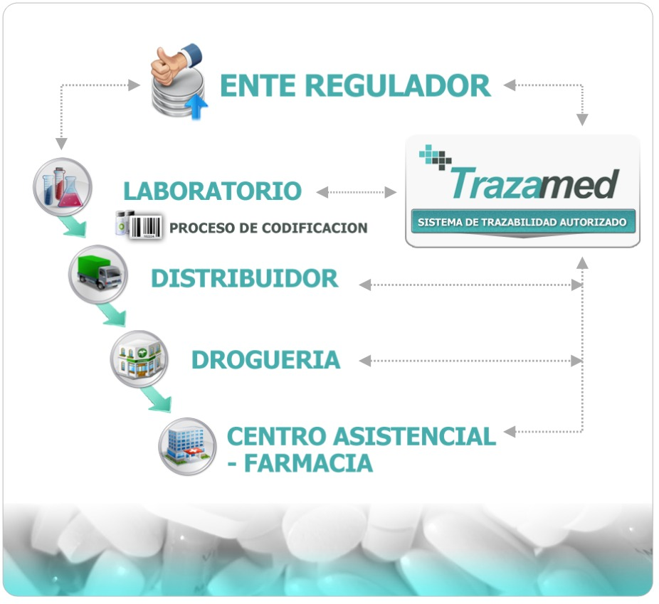

QUIENES SOMOS

VerFar es un sistema diseñado para garantizar la seguridad en el consumo de medicamentos. A través de una interfaz simple y amigable, permite a los usuarios ingresar los datos de una caja de medicamento, como el número de serie o el código de barras, y verificar su autenticidad.
El sistema consulta bases de datos oficiales para confirmar si el producto es legal y está autorizado para su comercialización. De esta manera, VerFar ofrece una herramienta útil para prevenir el consumo de medicamentos falsificados o no aprobados, protegiendo la salud de los usuarios.